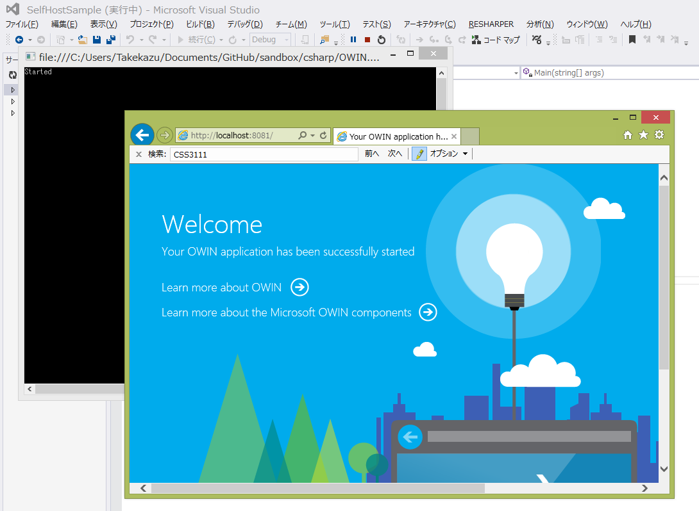

OWIN - Open Web Interface for .NET を使ってみる
OWIN(Open Web Interface for .NET) は、.NET Framework向けの新しい HTTP Serverのプログラミング抽象化レイヤーとして、.NETのWeb ServerとWeb アプリケーションの間の標準的なインターフェイスを定義している。 2010年の終わりのころに Benjamin van der Veen 氏 <http://bvanderveen.com/> が始め、 Draft 7 12 July 2012 では、Author: OWIN working group となっている。参照: http://owin.org/spec/history-1.0.html
.NETでは、HTTP Serverのプログラミング抽象化レイヤーは、ASP.NETの初期のことに構築されてその後ほぼ変わっていない。An Overview of Project Katana August 30, 2013 Howard Dierking に、初期のASP.NET設計時のターゲットの話が書いあり実に面白い。
これによると、当時ASP.NETの設計時には「Classic ASPを使っている人」と、「VB6等でWindows で業務アプリを書いている人」にWebプラットフォームプログラミングを提供することが主なターゲットで、また.NET Frameworkの一部としてリリースされるということであまり時間も無かったらしい。 その結果が、従来のVB6アプリの習慣に沿ったイベントモデルをベースにしたようなWeb Formsのアーキテクチャーと論理的に異なる、HTTP ObjectとWeb Forms FrameworkがタイトにカップルされたSystem.Web.dll だと書いてある。
昔を振り返ってみると、1993年の終わりころ [1] UCSA HTTPd にCGI が現れ、1996年には Windows NT 4.0 Option Pack で ASPが登場、1997年には、Java Servlet が出ている。ASP.NETのリリースは2002年 なので、ASPのリリースから6年たってほぼ同じモデルを踏襲した設計になっているということになる。今は更に11年後、ASPから数えると17年経ってる、変わらないのは資産の継承という点では良い面もあるが、その間蓄積された知識が十分生かされているかどうかとかんがえるとちょっと期間が長すぎたような気もする。その間Rubyを始めとする他のプラットフォームは新しいデザインを模索しており、OWINの発想のもとになっていると言われている Rack: a Ruby Webserver Interface Feb 2007 が生まれている。
ちょっと中を見てみた感じでは、OWIN自体は非常にシンプルな構成でコンポーネント指向も高くいい感じで使えそうだ。とりあえずなにか、OWIN Middleware を作ってみようと思ったけどネタが思い付かない。どうしようかと思っていたら、 neuecc/Owin.RedisSession なんてものを見つけ「ああOWINだとSessionすら無いのか」と気が付いて Azure Cache 版を作ってみることにした。
手探りで作った習作だが、簡単に中身を説明する。
OWIN Middleware
OWIN Middleware を使って下記のような構成を実現する。

基本的な考えは非常に簡単で、Invoke で処理の前後に割り込んでCache Providorの設定と後始末をするというだけ。アプリケーション全体の中での割り込む場所を制御する方法は後で考える（多分無い）
まずは試しで、OWIN Selft Host環境を作って書いてみる
install-package Microsoft.Owin.Hosting install-package Microsoft.Owin.Host.HttpListener install-package Microsoft.Owin.Diagnostics install-Package Owin.Extensions
Console Appliationを作ってmainを下記のようにする
Program.cs
Startup用のクラスを追加する
動かすとこんな感じになる
Windows Azure Cache Client を入れる
Install-Package Microsoft.WindowsAzure.Caching
http://www.nuget.org/packages/Microsoft.WindowsAzure.Caching/
OWIN Middleware 定番クラスを３つ追加する
install-Package Microsoft.Owin install-Package Microsoft.WindowsAzure.Caching install-Package EnterpriseLibrary.TransientFaultHandling.Caching
| [1] | Server Scripts, by Rob McCool, www-talk mailing list, Sun, 14 Nov 1993 19:24:47 -0600 |